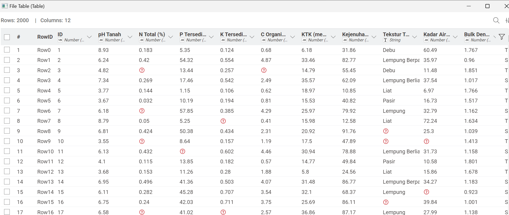
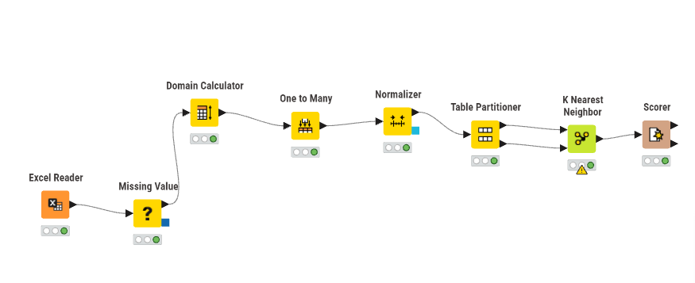
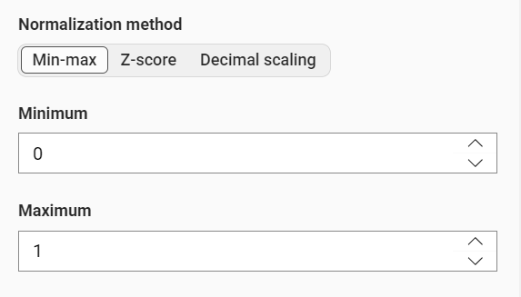
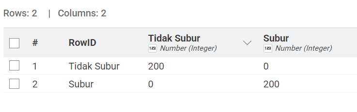
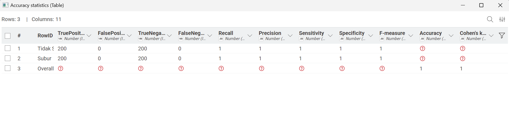

UTS Penambangan Data#
Analisis Klasifikasi Kesuburan Tanah Menggunakan K-Nearest Neighbors (KNN)#
Proyek ini mengimplementasikan algoritma pembelajaran mesin untuk mengklasifikasikan lahan pertanian. Dengan memanfaatkan 10 fitur agronomis, model ini membantu mengidentifikasi kondisi tanah secara otomatis guna mendukung efisiensi pemupukan dan penanaman.
Data Awal#

Alur Pemrosesan Data (Workflow)#
Pipeline data dirancang untuk memastikan integritas data dari tahap input hingga evaluasi akhir.

Tahapan Pre-processing#
Handling Missing Values → Menghapus atau mengisi data kosong
Feature Encoding → Mengubah data kategorikal menjadi numerik
Feature Scaling → Normalisasi agar data seimbang
Implementasi Normalisasi (Min-Max Scaling)#
Normalisasi penting karena KNN berbasis jarak. Tanpa normalisasi, fitur besar akan mendominasi.
Rumus Matematis#
Keterangan:
\(X\) = nilai asli
\(X_{min}\) = nilai minimum
\(X_{max}\) = nilai maksimum

Algoritma K-Nearest Neighbors (KNN)#
KNN bekerja dengan mencari kemiripan data berdasarkan jarak.
Rumus Euclidean Distance#
Keterangan:
\(p_i\), \(q_i\) = nilai fitur ke-i
Jarak kecil = data mirip
Hasil dan Metrik Evaluasi#

Perhitungan Metrik#
1. Accuracy
2. Precision
3. Recall
4. F1-Score

Kesimpulan#
Model KNN menghasilkan akurasi 100%, menunjukkan performa sangat baik dalam klasifikasi kesuburan tanah. Kombinasi normalisasi Min-Max dan Euclidean Distance memberikan hasil optimal.